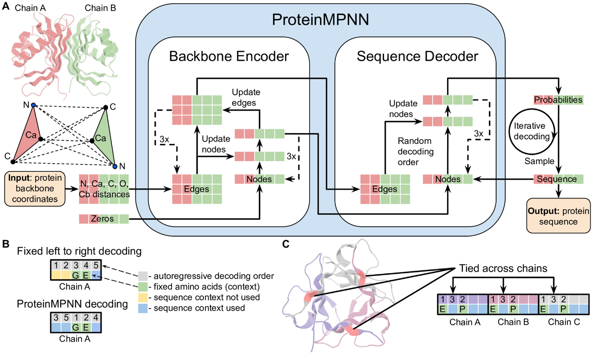
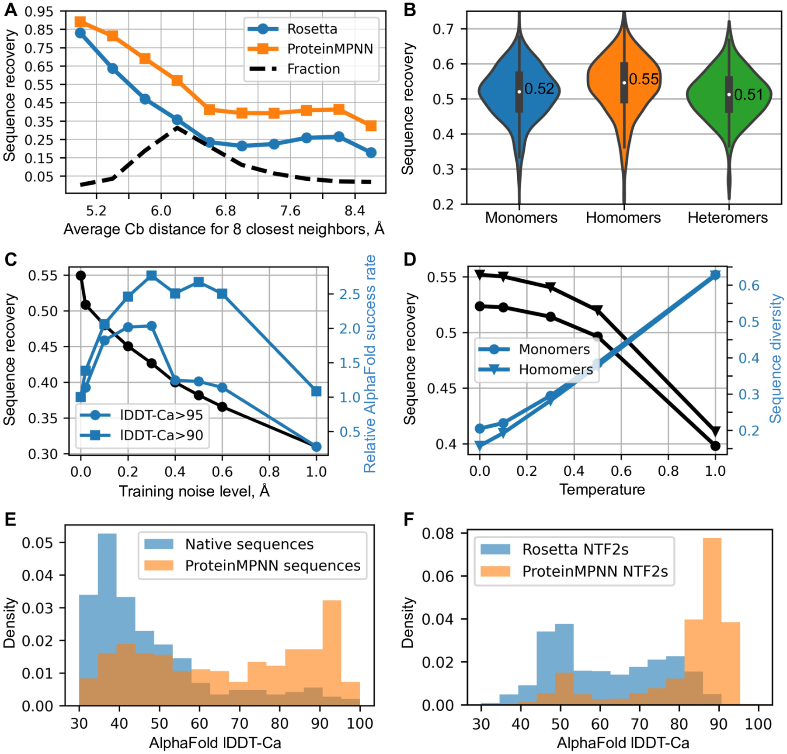
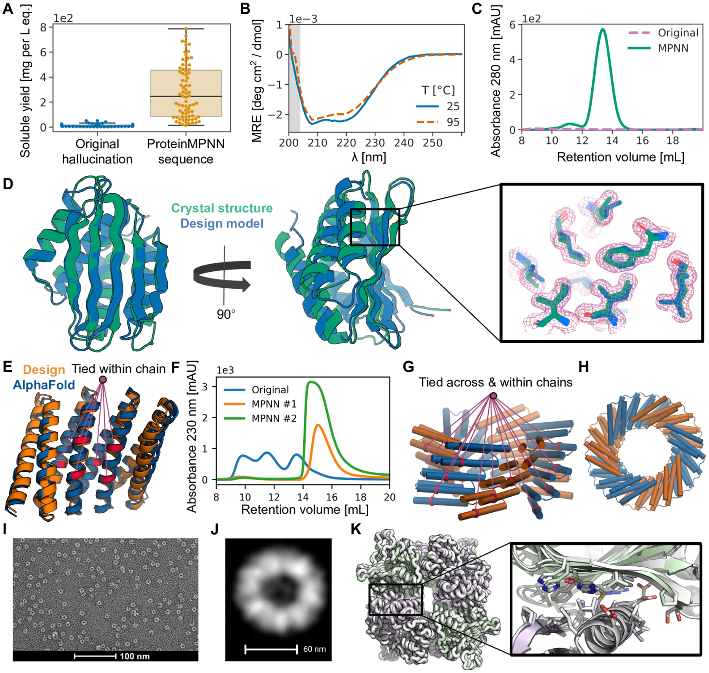
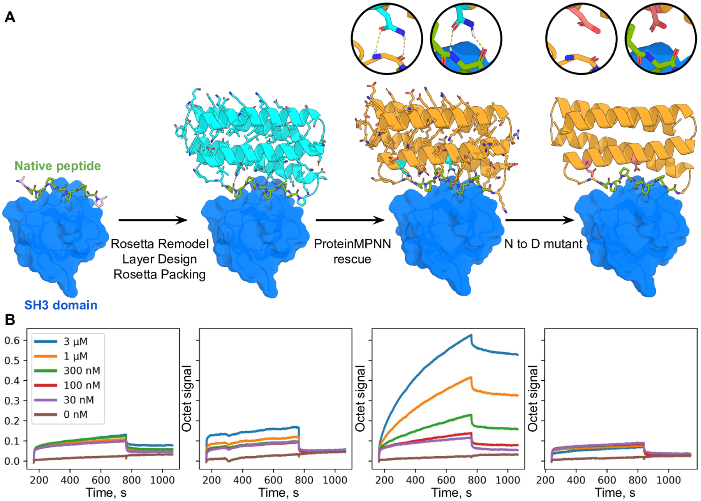

Robust deep learning–based protein sequence design using ProteinMPNN
Justas Dauparas, Ivan Anishchenko, Nathaniel Bennett, Han Bai, Robert J. Ragotte, L. F. Milles, B. I. M. Wicky, Alexis Courbet, R. J. de Haas, N. Bethel, P. J. Y. Leung, T. F. Huddy, S. Pellock, D. Tischer, F. Chan, B. Koepnick, H. Nguyen, A. Kang, B. Sankaran, A. K. Bera, N. P. King, David Baker | Science 378 (6615): 49–56 (2022) | doi:10.1126/science.add2187
翻译说明(请先阅读)
1. 源文本为 PMC/NIHMS(HHMI 作者手稿,NIHMS1874648)的 XML 提取文本。文件开头的期刊元数据串(PMC 编号、收录信息、作者贡献清单、CC 许可声明等)并非论文正文,未予翻译;作者名单、单位与正文内容一律以手稿为准。作者贡献(Conceptualization/Software/Funding 等)属投稿元数据,亦未翻译。
2. XML 提取把正文中的圆括号引用统一转成了方括号(如 (Fig. 1A) 被提取为 [Figure 1A]);本译文按 Science 刊文样式复原为圆括号,图表编号保持原样。
3. 手稿正文引用编号与文末参考文献列表编号存在系统错位(如正文 [7] 指 CATH 分类,而列表第 7 条是 Hsu et al.;正文 [8] 指顺序无关解码,对应列表第 9 条 Uria et al.;正文 [9] 指 AlphaFold,对应列表第 10 条;正文 [10] 指 mmseqs2,对应列表第 11 条;图 4 图注中 [19] 指 RIFDOCK,对应列表第 20 条 Cao et al.)。系手稿两套编号不同步所致,译文按原样保留编号、不作改动,请读者自行对照。
4. 提取丢失的希腊字母与符号已按上下文复原:Ca → Cα、Cb → Cβ、lDDT-Ca → lDDT-Cα;"2.35 RMSD"(图 3D 图注)复原为 2.35 Å;Å 统一为 Å;">" 复原为 ">"、"&" 复原为 "&"。
5. 原文明显排版/拼写错误按正确形式翻译并在译注中说明:图 2 图注 "AphaFold" → "AlphaFold";图 3A 图注 "unders size exclusion traces" → "under size exclusion traces";致谢中 "Office of 20 Basic Energy Sciences" 的 "20" 为 XML 提取混入的页码伪影,已删去;表 1 脚注 "amino amino acids" → "amino acids"。
6. 正文 "([1]–[6], 6a)" 中的 "6a" 为手稿对一条参考文献的非标准引用写法,按原样保留。
7. 参考文献按规范保留英文原文、逐条完整保留,不翻译;仅将提取时粘连的作者姓名补回空格,并把粘连在条目尾部的 DOI/PMC/PMID 数字按标准格式分离标注(doi:、PMC、PMID)。
8. 本手稿的 Methods(方法)部分位于补充材料("Supp Methods and S1–S9")中,正文未含,故本译文无独立方法章节;正文中 "(see Methods)" 等指代按原文保留并译出。表 1(Table 1)为正文表格,已完整翻译。
9. 图 2 图注在原稿中即无 (E) 分图的图注条目((E) 仅在正文引用),译文按原样保留,未补写。
第一部分:论文全文翻译
摘要
尽管深度学习已经彻底改变了蛋白质结构预测,但迄今为止,几乎所有经过实验表征的从头蛋白质设计(de novo protein design,即不依赖天然序列、全新设计蛋白质)都是用 Rosetta 等基于物理的方法生成的。本文描述了一种基于深度学习的蛋白质序列设计方法——ProteinMPNN,它在计算测试与实验测试中均有出色表现。不同位置上的氨基酸序列可以在单条或多条链之间相互耦合,从而使该方法适用于当前蛋白质设计中范围广泛的挑战。在天然蛋白质骨架(backbone)上,ProteinMPNN 的序列回收率(sequence recovery)为 52.4%,而 Rosetta 为 32.9%。训练过程中引入噪声提升了在蛋白质结构模型上的序列回收率,并使生成的序列能够更稳健地编码其结构(以结构预测算法评估)。我们通过挽救(rescue)此前用 Rosetta 或 AlphaFold 制作的失败设计——包括蛋白质单体、环状同源寡聚体(cyclic homo-oligomer)、四面体纳米颗粒(tetrahedral nanoparticle)和靶标结合蛋白(target-binding protein)——并借助 X 射线晶体学、冷冻电镜(cryoEM)和功能研究,展示了 ProteinMPNN 的广泛用途与高精度。
一句话总结:本文描述了一种基于深度学习的蛋白质序列设计方法,它广泛适用于当前的设计挑战,并在计算与实验测试中均表现出色。
引言
蛋白质序列设计问题是指:给定一个感兴趣的蛋白质骨架结构,寻找一段能折叠成该结构的氨基酸序列。Rosetta 等基于物理的方法将序列设计视为一个能量优化问题,即搜索在给定输入结构下能量最低的氨基酸种类与构象的组合。近来,深度学习方法已显示出相当的前景:给定单体蛋白质骨架即可快速生成合理的氨基酸序列,而无需计算密集地显式考虑侧链旋转异构体(rotamer,侧链优先采取的离散构象)状态([1]–[6], 6a)。然而,迄今所报道的方法在适用于当前广泛的蛋白质设计挑战方面仍受限制,而且尚未经过广泛的实验验证。
结果
我们着手开发一种基于深度学习的蛋白质序列设计方法,使其广泛适用于单体、环状寡聚体、蛋白质纳米颗粒(nanoparticle)以及蛋白质-蛋白质界面(protein-protein interface)的设计。我们的起点是一个此前已报道的消息传递神经网络(message passing neural network, MPNN;图神经网络的一类,节点与边通过迭代交换"消息"来更新特征),它具有 3 层编码器(encoder)与 3 层解码器(decoder)、128 维隐藏层(hidden layer),以蛋白质骨架特征——Cα–Cα 原子间距离、相对的 Cα–Cα–Cα 参考系朝向与旋转,以及骨架二面角(backbone dihedral angles)——作为输入,以自回归(autoregressive,即逐个位置生成、每一步都以已生成的内容为条件)的方式从 N 端到 C 端预测蛋白质序列([1])。我们首先致力于提升模型在给定天然单体蛋白质骨架时恢复其氨基酸序列的性能:训练集与验证集采用来自 PDB(Protein Data Bank,蛋白质结构数据库)的 19.7k 个高分辨率单链结构,并按 CATH([7];一个按类/构象/拓扑/同源性层级划分的蛋白质结构域分类体系)蛋白质分类进行划分(见 Methods)。我们尝试将 N、Cα、C、O 以及一个基于其他骨架原子放置的虚拟 Cβ 相互之间的距离作为额外输入特征,推测它们能比骨架二面角特征带来更好的推断。这将序列回收率(sequence recovery,指设计序列与天然序列在相同位置上氨基酸一致的比例)从 41.2%(基线模型)提高到 49.0%(实验 1),见下文 (Table 1);显然,与二面角或 N–Cα–C 参考系朝向相比,原子间距离为捕捉残基间相互作用提供了更好的归纳偏置(inductive bias,模型先验假定的"何种特征与任务相关"的倾向)。接着,我们尝试在骨架编码器神经网络的节点更新(node update)之外引入边更新(edge update)(实验 2)。将额外输入特征与边更新相结合,序列回收率达到 50.5%(实验 3)。为确定骨架几何在多大空间范围内影响氨基酸身份,我们试验了最近 Cα 邻居数分别为 16、24、32、48 和 64 的神经网络((Fig. S1A)),发现性能在 32–48 个邻居时达到饱和。与蛋白质结构预测问题不同,局部连接的图神经网络可以用来建模"结构到序列"的映射问题,因为蛋白质骨架本身就提供了局部邻域的概念,而这些局部邻域主要决定了各位置的氨基酸身份。
为使方法能够适用于范围广泛的单链与多链设计问题,我们用一种顺序无关的自回归模型(order agnostic autoregressive model)取代了固定的 N 端到 C 端解码顺序:解码顺序从所有可能排列的集合中随机采样([8])。这也使序列回收率略有提升((Table 1),实验 4)。顺序无关解码使得诸如"蛋白质序列中段固定、其余部分需要设计"之类的情形成为可能,例如在靶标序列已知的蛋白质结合蛋白(binder)设计中;解码会跳过固定区域,但会将其纳入其余位置的序列上下文((Fig. 1B))。对于多链设计问题,为使模型对蛋白质链的排列顺序等变(equivariant,即输入中链顺序交换时输出随之相应交换),我们保留了每条链内上限为 ±32 个残基的相对位置编码(positional encoding)([9]),并添加了一个二元特征,用于指示相互作用的残基对是来自同一条链还是不同的链。
我们利用解码顺序的灵活性——它允许在推断时(inference)为特定任务选择合适的解码顺序——实现了对成组对应位置上残基身份的固定(这些位置上的残基被同时解码)。例如,对于一个由链 A 和链 B 组成的 C2 同源二聚体(homodimer)骨架(C2 指二重旋转对称),两条链的序列分别为 A1、A2、A3、…与 B1、B2、B3、…,对应下标处链 A 与链 B 的氨基酸必须相同;我们的实现方式是:先分别预测 A1 和 B1 的 logits(未归一化概率,即 softmax 之前的输出),再把这两个预测组合起来构建一个归一化的概率分布,并从中采样出一个联合氨基酸((Fig. 1C))。对于伪对称(pseudosymmetric)序列设计,链内或链间的残基可以用同样方式施加约束;例如在重复蛋白设计中,可以保持每个重复单元中的序列固定。多态蛋白质序列设计(multistate design)——即生成一条同时编码两个或更多期望状态的单一序列——可以通过对每个状态分别预测 logits 再取平均来实现;更一般地,还可以对预测的 logits 做带正、负系数的线性组合,以上调或下调特定骨架状态的权重,实现显式的"正-负"序列设计。这个多链且对称感知(位置耦合)的模型架构——我们称之为 ProteinMPNN——示意于 (Fig. 1A)。我们在 PDB(截至 2021 年 8 月 2 日)中由 X 射线晶体学或冷冻电镜测定、分辨率优于 3.5 Å 且残基数少于 10,000 的蛋白质组装体上训练 ProteinMPNN。序列用 mmseqs2([10])在 30% 序列同一性(sequence identity)阈值下聚类,得到 25,361 个簇(见 Methods)。

Figure 1 图注翻译
Figure 1. ProteinMPNN 架构。
(A) N、Cα、C、O 与虚拟 Cβ 之间的距离被编码,并通过消息传递神经网络(编码器)处理,得到图的节点与边特征。编码后的特征连同部分序列一起,用于按随机解码顺序迭代生成氨基酸。(B) 固定的从左到右解码无法为前序位置(黄色)利用序列上下文(绿色),而以随机解码顺序训练的模型在推断时可以采用任意解码顺序。可以选择让固定上下文先被解码的解码顺序。(C) 链内与链间的残基位置可以绑定在一起,从而实现对称设计、重复蛋白设计与多态设计。本例中设计的是一个同源三聚体,不同链中的位置被耦合。被绑定位置的预测 logits 取平均后得到单一概率分布,再从中采样氨基酸。
【译注】看图要点:(A) 对应"编码器-解码器"两段式结构:骨架几何(原子间距离)→ 消息传递编码 → 随机顺序自回归解码。(B) 是本文相对固定 N→C 解码的关键改进来源:训练时随机化解码顺序,推断时即可"先解码已固定区域",使 binder 设计等任务成为可能。(C) 是对称/重复/多态设计的实现机制:对称等价位置的 logits 取平均后采样同一种氨基酸。
对于一个包含 402 个单体骨架的测试集,我们分别用 Rosetta 固定骨架组合序列设计(以默认选项、beta_nov16 评分函数(scoring function)运行一轮 PackRotamersMover([11]–[12]))和 ProteinMPNN 重新设计了序列。尽管所需计算时间只占很小一部分(100 个残基为 1.2 秒对 4.3 分钟),ProteinMPNN 的整体天然序列回收率却高得多(52.4% 对 32.9%),而且从蛋白质核心到表面的全部残基埋藏程度(burial)范围内都有提升((Fig. 2A))。两种方法在核心、边界与表面区域的设计氨基酸组成偏好相对天然氨基酸组成偏好的差异见 (Fig. S2)。
我们在一个包含 690 个单体、732 个同源寡聚体(homo-oligomer)(残基数少于 2000)与 98 个异源寡聚体(hetero-oligomer)的测试集上评估了 ProteinMPNN。整体序列回收率的中位数分别为:单体 52%、同源寡聚体 55%、异源寡聚体 51%((Fig. 2B))。在上述三种情形中,序列回收率都与残基埋藏程度密切相关:从深埋核心处的 90–95% 到表面处的 35%((Fig. S1B))——局部几何上下文的多少决定了特定位置上的残基能被恢复得多好。对于同源寡聚体,我们发现对对称相关位置的 logits 取平均的效果最佳:无对称约束的自由设计、对概率取平均、对 logits 取平均,三者的序列回收率中位数分别为 52%、53% 和 55%((Fig. S1C))。由于存在非局部上下文,序列回收率不再是平均 Cβ 邻居距离的单调函数;一些残基通过概率平均从其对称对应残基获得信息((Fig. S1B))。
训练时的骨架噪声提升模型在蛋白质设计中的表现(Training with backbone noise improves model performance for protein design)
近来的蛋白质序列设计方法都聚焦于最大化天然序列回收率,但这对于实际的蛋白质设计应用未必是最优的。在完美蛋白质骨架上训练、并以低温度(temperature)进行随机序列推断的模型,其天然序列回收率很可能最高。然而我们推测,以带骨架噪声的训练和更高温度的推断,或许能带来更好的蛋白质设计表现,如下文各段所述。
在真实应用中,蛋白质骨架几何并非以原子级分辨率已知,因此对原子坐标微小位移的鲁棒性是序列设计方法的一个理想特性。我们发现,在添加了高斯噪声(Gaussian noise)(std=0.02 Å)的骨架上训练模型,可提升其在 AlphaFold 从 UniRef50 序列生成的可信蛋白质结构模型(平均 pLDDT>80.0;pLDDT 为 AlphaFold 输出的逐残基置信度分值,0–100)上的序列回收率,而在未受扰动的 PDB 结构上的序列回收率则如预期有所下降((Table 1))。晶体学精修(crystallographic refinement)可能在骨架坐标中留下氨基酸身份的某种"记忆",在完美骨架上训练的模型能够恢复这种信息,但它并不存在于预测结构中;由于目标是给定整体骨架上下文找出最优序列,更鲁棒的模型更为可取。
AlphaFold([9])与 RoseTTAFold([13])在给定多序列比对(multiple sequence alignment, MSA)时能对天然蛋白做出相当好的结构预测——多序列比对可包含大量共进化(coevolution)及其他反映三维结构某些方面的信息;但在只提供单一序列时,它们通常会产生差得多的结构。我们推测,由于进化在多数情况下并不针对稳定性进行优化,ProteinMPNN 或许能为天然骨架生成比原天然序列更强烈地编码该结构的序列,于是我们对 396 个天然结构进行了完全重新设计。在单序列 AlphaFold 预测中,ProteinMPNN 序列被预测采用原天然骨架结构的置信度和准确性都远高于原天然序列((Fig. 2E))。我们还在一组包含多种配体结合口袋(ligand-binding pocket)的从头设计支架(scaffold)上测试了 ProteinMPNN。原 Rosetta 设计的序列中只有一小部分被预测折叠成设计目标结构;经 ProteinMPNN 重新设计后,大多数序列都被高置信度地预测折叠为接近设计目标的结构((Fig. 2F))。这将显著提升这些支架在蛋白质结合功能与酶功能设计中的用途——序列折叠成目标结构的可能性更高,而且基于这些支架设计的酶和小分子结合蛋白,在实验表征之前就可以用类似的结构预测测试加以评估。
我们发现,以 AlphaFold 评估,单序列到结构的映射强度在用额外骨架噪声训练的模型上更高。如前所述,完美骨架上的平均序列回收率随训练时噪声量的增加而下降((Fig. 2C)),因为这些模型无法捕捉骨架几何的精细细节。与之相反,带噪 ProteinMPNN 模型所编码的序列被 AlphaFold 更准确地解码为三维坐标,原因很可能在于带噪模型更关注整体拓扑特征而非精细的局部结构细节(后者在加噪过程中被模糊掉了)。例如,一个以 0.3 Å 噪声训练的模型,其 AlphaFold 预测与真实结构的 lDDT-Cα([14];lDDT 为基于距离差异的局部结构相似性得分)在 95.0 和 90.0 以内的序列数量,是无噪声或轻微噪声模型的 2–3 倍((Fig. 2C))。在蛋白质设计计算中,以较大量噪声训练的模型的优势在于:其生成的序列经预测方法评估能更强烈地映射到目标结构(这提高了设计通过基于预测的筛选的频率,也可能相应提高实际折叠成期望目标结构的频率)。
由于蛋白质表达、可溶性与功能的序列决定因素尚未被完全理解,在大多数蛋白质设计应用中,人们希望对多条设计序列进行实验测试。我们发现,通过在更高温度下进行推断,MPNN 生成序列的多样性可以大幅提升,而平均序列回收率仅有极小的下降((Fig. 2D);采样温度 T 控制从模型分布采样的"保守-多样"程度)。我们还发现,一个由 ProteinMPNN 导出的序列质量度量——给定结构时序列的平均对数概率(mean log probability)——在一系列温度上都与天然序列回收率强相关((Fig. S3A)),从而可以对序列快速排序,以便挑选出来进行实验表征。

Figure 2 图注翻译
Figure 2. ProteinMPNN 的计算评估。
(A) ProteinMPNN 的天然序列回收率高于 Rosetta。横轴为 8 个最近邻居的平均 Cβ 距离,用以反映埋藏程度:最埋藏的位置在左侧,更暴露的位置在右侧;ProteinMPNN 在所有埋藏水平上均优于 Rosetta。ProteinMPNN 的平均序列回收率为 52.4%,Rosetta 为 32.9%。(B) ProteinMPNN 对单体、同源寡聚体与异源寡聚体都有同样高的序列回收率;小提琴图(violin plot)对应 690 个单体、732 个同源寡聚体、98 个异源寡聚体。(C) 序列回收率(黑色)与相对 AlphaFold 成功率(蓝色)随训练噪声水平的变化。对于更高精度的预测(圆点),较小的噪声量是最优的(1.0 对应 1.8% 的成功率);而要在较低的精度阈值下最大化预测成功(方点),用更多噪声训练的模型更好(1.0 对应 6.7% 的成功率)。(D) 序列回收率与多样性随采样温度的变化。用 ProteinMPNN 对天然蛋白质骨架重新设计,在不使用任何多序列信息的情况下,相比原天然序列大幅提升了 AlphaFold 的预测精度。两种情况下输入的都是单序列(设计序列或天然序列)。(F) 用 ProteinMPNN 对此前 Rosetta 设计的 NTF2 折叠蛋白(共 3,000 个骨架)进行重新设计,显著提升了 AlphaFold 单序列预测的精度。
【译注】看图要点:(A) 关键卖点——对 Rosetta 的全面超越且速度快约 200 倍;(B) 方法对单体/同源/异源寡聚体普适;(C) "噪声换鲁棒"的权衡曲线:噪声越大,完美骨架上的回收率越低,但低精度阈值下的 AlphaFold 单序列成功率越高;(D) "温度换多样性":温度升高,多样性显著增大而回收率几乎不降;(E)、(F) 用 AlphaFold 单序列预测作为"序列是否真正编码了目标结构"的裁判。原文图注即无 (E) 分项说明((E) 仅正文引用),此处按原样保留。
Table 1 表格翻译
Table 1. 在 CATH 留出测试集划分(held-out)上的单链序列设计性能。
| 训练噪声(0.00 Å / 0.02 Å) | 改动 | 参数量 | PDB 测试准确率 | PDB 测试困惑度 | AlphaFold 模型准确率 |
|---|---|---|---|---|---|
| 基线模型 | 无 | 1.381 mln | 41.2/40.1 | 6.51/6.77 | 41.4/41.4 |
| 实验 1 | 加入 N、Cα、C、Cβ、O 距离 | 1.430 mln | 49.0/46.1 | 5.03/5.54 | 45.7/47.4 |
| 实验 2 | 更新编码器边 | 1.629 mln | 43.1/42.0 | 6.12/6.37 | 43.3/43.0 |
| 实验 3 | 结合实验 1 与实验 2 | 1.678 mln | 50.5/47.3 | 4.82/5.36 | 46.3/47.9 |
| 实验 4 | 实验 3 改用随机而非正向解码 | 1.678 mln | 50.8/47.9 | 4.74/5.25 | 46.9/48.5 |
【译注】表中数值格式为"天然骨架训练模型(左,正常字体)/加噪训练模型(右,加粗字体)";准确率即正确恢复氨基酸的百分比;困惑度(perplexity)为每残基指数化的分类交叉熵(cross-entropy)损失,越低越好;所有测试评估均不添加噪声;最后一列为在从 UniRef50 序列中随机选取的 5,000 个平均 pLDDT > 80.0 的 AlphaFold 蛋白质骨架模型上的序列回收率。可以看出:加噪训练让 PDB 测试准确率略降、AlphaFold 模型准确率上升——正是"鲁棒换精度"的体现。
ProteinMPNN 的实验评估(Experimental evaluation of ProteinMPNN)
计算意义上的天然蛋白质序列回收率虽是有用的基准,但蛋白质设计方法的最终检验,是其在实验测试中生成既能折叠成目标结构、又具备目标功能的序列的能力。我们在一组有代表性的设计挑战上评估了 ProteinMPNN,涵盖蛋白质单体设计、蛋白质纳米笼(nanocage)设计和蛋白质功能设计。在每一项中,我们都尝试用 ProteinMPNN 挽救(rescue)此前用 Rosetta 或 AlphaFold 生成序列的失败设计——保持原设计的骨架不变,但丢弃原序列并用 ProteinMPNN 生成新序列。我们合成了编码这些设计的基因,在大肠杆菌(E. coli)中表达蛋白,并进行了生化和结构表征。
我们首先测试了 ProteinMPNN 为"深度网络幻觉"(deep network hallucination,借用图像深度模型"凭空想象"的说法:从随机序列出发优化,使网络输出目标性质)骨架设计氨基酸序列的能力,这些骨架由基于 AlphaFold(AF)的幻觉生成:从一条随机序列出发,进行蒙特卡洛(Monte Carlo)轨迹搜索,优化 AF 预测该序列折叠成明确结构的程度(细节见配套论文,Wicky et al.)。这些计算为单体与寡聚体生成了非常广泛的蛋白质序列和骨架,它们与天然结构差异很大。在初期测试中,由 AF 生成的序列被合成基因,我们尝试在大肠杆菌中表达 150 个蛋白质。然而我们发现,AF 生成的序列大多不可溶(可溶产量中位数:每升培养物当量 9 mg,(Fig. 3A))。为确定 ProteinMPNN 能否克服这一问题,我们用 ProteinMPNN 为其中一部分骨架生成序列;如前所述,通过对称等价位置的 logits 取平均来绑定残基身份(tying)。设计序列再次被合成基因并在大肠杆菌中生产。成功率远高于之前:96 个在大肠杆菌中生产的设计中,73 个可溶表达(可溶产量中位数:每升培养物当量 247 mg,(Fig. 3A)),50 个经 SEC(尺寸排阻色谱,size exclusion chromatography,即分子筛)评估具有目标单体或寡聚状态(oligomeric state)((Fig. 3A, C))。许多蛋白质具有很高的热稳定性,二级结构可维持到 95 °C((Fig. 3B))。
我们解析了其中一个 ProteinMPNN 单体设计的 X 射线晶体结构,其折叠比大多数从头设计的蛋白质更复杂(相对 PDB 的 TM-score=0.56;TM-score 为衡量全局折叠相似性的得分,0–1,低于约 0.5 通常意味着折叠不同)((Fig. 3D))。该 α-β 蛋白结构包含 5 条 β 折叠股(β strand)与 4 条 α 螺旋,并且与设计目标骨架接近(130 个残基上偏差 2.35 Å),表明 ProteinMPNN 能把单体骨架几何相当准确地编码进氨基酸序列。结构中央核心处的精度尤其高:由 ProteinMPNN 序列用 AlphaFold 预测的侧链几乎完美地契合电子密度((Fig. 3D))。十个具有 130–1800 个氨基酸的环状同源寡聚体的晶体结构与冷冻电镜结构也非常接近设计目标骨架(配套论文,Wicky et al.)。因此,ProteinMPNN 能为单体和环状寡聚体鲁棒而准确地设计序列。
接下来,我们利用 ProteinMPNN 灵活的解码顺序,为含内部重复的蛋白质(repeat protein)设计序列,将等价位置的残基身份绑定。我们发现,许多此前欠佳的 Rosetta 重复蛋白结构设计可以经 ProteinMPNN 重新设计而得到挽救,一例见 (Fig. 3E, F)。
接下来,我们尝试通过在亚基内与亚基间同时绑定位置,来同时施加环状对称与内部重复对称,如 (Fig. 3G) 所示。我们实验表征了一组用 Rosetta 构建、序列也由 Rosetta 设计的 C5/C6 环状寡聚体(C5/C6 指五重/六重旋转对称),以及第二组序列用 ProteinMPNN 设计的同类寡聚体,再次观察到 ProteinMPNN 设计的成功率高得多。Rosetta 设计组中,40% 可溶,且没有一个经 SEC-MALS(尺寸排阻色谱-多角度光散射联用,可测定绝对分子量与寡聚状态)确认具有正确的寡聚状态;ProteinMPNN 设计组中,88% 可溶,27.7% 具有正确的寡聚状态。我们用负染电镜(negative stain EM)表征了其中一个尺寸足以分辨结构特征的设计的结构((Fig. 3I)),图像的分类平均(class average)与设计模型高度一致((Fig. 3J))。
接下来,我们评估了 ProteinMPNN 设计能够自组装成目标蛋白质纳米颗粒组装体之序列的能力。我们从一组此前报道的双组分(two-component)四面体设计骨架出发,这些骨架的生成过程计算量大、耗费人力:先做 Rosetta 序列设计,随后还需一周多的人工干预以消除不想要的氨基酸取代([15])。我们用 ProteinMPNN 为其中 27 个四面体纳米颗粒骨架设计了 76 条序列,绑定组装体中每个亚基 12 份拷贝中等价位置的身份,并无需任何进一步干预就订购了编码它们的质粒。我们发现,在大肠杆菌中表达并经 SEC 纯化后,13 个设计形成了具有预期分子量(MW,约 1 MDa)的组装体((Fig. S4))。虽然原研究中用 Rosetta 获得了相近的总体成功率,但有几个此前用 Rosetta 失败的新四面体组装体用 ProteinMPNN 成功生成了。我们解析了其中一个的晶体结构,发现它与设计模型非常接近(两个亚基上 Cα RMSD 为 1.2 Å;RMSD 即均方根偏差)((Fig. 3K))。因此,ProteinMPNN 能鲁棒地设计可组装成设计纳米颗粒的序列,而这类纳米颗粒已在包括基于结构的疫苗设计在内的多项生物技术用途中被证明有用([16]–[18])。MPNN 的序列生成完全自动化,每个骨架仅需约 1 秒,与早期基于 Rosetta 的流程相比极大地简化了设计过程。
作为最后一项测试,我们评估了 ProteinMPNN 挽救此前用 Rosetta 进行新蛋白质功能设计时失败设计的能力。我们选择了一个有挑战性的例子:设计支架化(scaffolded)多聚脯氨酸螺旋基序(polyproline helix,富含脯氨酸的左手 PPII 螺旋,常见于 SH3 结构域的结合基序)的蛋白质——该基序被 SH3 结构域(Src 同源区 3 结构域,一类识别富脯氨酸基序的相互作用结构域)识别,并使 SH3 肽基序之外的蛋白支架部分与靶标形成额外相互作用;更长远的目标是生成对单个 SH3 家族成员具有高亲和力与特异性的蛋白质试剂。我们用 RosettaRemodel 生成了支架化 Grb2 SH3 结构域所识别的富脯氨酸肽的骨架(Grb2 为生长因子受体结合蛋白 2,接头蛋白(adaptor protein);见 Fig. 4 图例),但在大肠杆菌中表达时,为这些骨架设计的序列并未折叠成结合 Grb2 的结构((Fig. 4B);该设计问题颇具挑战性,因为很少有天然蛋白具有与蛋白核心紧密相互作用、富含脯氨酸的二级结构元件)。为测试 ProteinMPNN 能否克服这一问题,我们为相同骨架生成序列并在大肠杆菌中表达蛋白。生物层干涉测量(biolayer interferometry,BLI,一种实时测量生物分子结合的免标记技术)实验显示其与 Grb2 SH3 结构域强结合((Fig. 4B)),信号显著高于游离的富脯氨酸肽;而预测会破坏设计的点突变则完全消除了结合信号。因此,即便传统 RosettaDesign 失败,ProteinMPNN 也能为具有挑战性的蛋白质设计问题生成序列。

Figure 3 图注翻译
Figure 3. ProteinMPNN 设计的实验结构表征。
(A) 对一组 AlphaFold 幻觉得到的单体与同源寡聚体(蓝色)以及同一组骨架换用 ProteinMPNN 设计序列(橙色)的可溶蛋白表达比较,N=129。在大肠杆菌中表达后,经镍-NTA 纯化的蛋白的尺寸排阻谱积分面积给出的总可溶蛋白产量,在 ProteinMPNN 挽救后相比原序列那种几乎不可溶的蛋白大幅提升(每升培养物当量的中位产量:分别为 9 与 247 mg)。(B)、(C)、(D) 对 A 组中一个单倍幻觉设计及其 ProteinMPNN 挽救版的深入表征。与 A 组中几乎所有设计一样,该设计模型对 PDB 的序列与结构相似度都很低(用 HHblits 对 UniRef100 的 E 值=2.8,对 PDB 的 TM-score=0.56)。(B) 经 ProteinMPNN 挽救的设计具有高热稳定性:95 °C 与 25 °C 相比圆二色谱(circular dichroism,监测二级结构的谱学方法)几乎不变。(C) 失败的原设计(叠加显示)与 ProteinMPNN 序列设计的尺寸排阻(SEC)谱;后者在预期保留体积(retention volume)处有清晰的单分散峰(monodisperse)。(D) ProteinMPNN 设计(8CYK)的晶体结构与设计模型几乎一致(130 个残基上 2.35 Å),更多信息见 (Fig. S5)。右图为电子密度中的模型侧链:晶体结构侧链为绿色,AlphaFold 预测侧链为蓝色。(E)、(F) ProteinMPNN 对一个由完全重复的结构与序列单元构成的 Rosetta 设计(DHR82)的挽救。ProteinMPNN 序列推断时绑定了重复单元中对应位置的残基。(E) 骨架设计模型与 MPNN 重新设计序列的 AlphaFold 模型,绑定的残基以连线标示(232 个残基上误差约 1.2 Å)。(F) 经 IMAC(固定化金属亲和色谱)纯化的原 Rosetta 设计与两个 ProteinMPNN 重设计的 SEC 谱。(G)、(H) 在 ProteinMPNN 序列推断时同时在链内与链间绑定残基,以同时施加重复蛋白与环状两种对称。(G) 设计模型侧视图,一组被绑定的残基以红色显示。(H) 设计模型俯视图。(I) 纯化设计的负染电子显微照片。(J) 来自 I 的图像分类平均与 H 中俯视图密切吻合。(K) 用 ProteinMPNN 界面设计挽救失败的双组分 Rosetta 四面体纳米颗粒设计 T33–27([13])。经 ProteinMPNN 挽救后,纳米颗粒高产地顺利组装,且晶体结构(灰色)与设计模型(绿色/紫色)几乎完全一致(在构成 ProteinMPNN 挽救界面的两个完整不对称单元(asymmetric unit)上,骨架 RMSD 为 1.2 Å)。
【译注】看图要点:本图是"实验验证"主战场——(A) 幻觉骨架可溶产量中位数从 9→247 mg/L;(B)-(D) 高热稳定性、单分散、晶体结构与设计模型几乎一致;(E)-(J) 重复/双对称设计救援(rescue);(K) 四面体纳米颗粒救援后晶体结构 1.2 Å 吻合。核心信息:ProteinMPNN 序列能把各种"非天然"骨架真实地折叠出来。

Figure 4 图注翻译
Figure 4. 用 ProteinMPNN 设计蛋白质功能。
(A) 设计方案。第一幅:与人类 Grb2 C 端 SH3 结构域结合的肽 APPPRPPKP 的结构(PDB 2W0Z;肽为绿色,靶标以表面表示并着蓝色)。第二幅:用 RIFDOCK([19];基于旋转体界面特征的对接方法)将螺旋束支架对接到肽的暴露面上,并用 RosettaRemodel 构建连接肽与支架的环。使用带分层设计(layer design)任务操作符的 Rosetta 序列设计来优化融合蛋白的序列(青色),以获得稳定性、肽-螺旋束界面的刚性以及对 Grb2 SH3 结构域的结合亲和力。第三幅:用 ProteinMPNN(橙色)重新设计设计好的结合序列;肽与底部支架之间由天冬酰胺侧链介导的氢键以绿色显示(并见插图)。第四幅:将两个天冬酰胺突变为天冬氨酸,以破坏对靶肽的支架化。(B) 用生物层干涉测量对结合的实验表征。将生物素化的人类 Grb2 C 端 SH3 结构域加载到链霉亲和素(SA)生物传感器上,随后浸入含不同浓度靶肽(左)或各设计蛋白(右侧各图)的溶液中,再转移到不含添加蛋白的缓冲液中进行解离测量。MPNN 设计(左起第 3 图)比原 Rosetta 设计(左起第 2 图)有高得多的结合信号;该信号在天冬酰胺→天冬氨酸突变后(最右图)大幅降低。
【译注】看图要点:(A) 展示"骨架不变、只换序列引擎"的实验范式——同一批 Rosetta 骨架,原序列失败、ProteinMPNN 序列成功;(B) BLI 信号定量验证结合,且破坏性点突变消除信号,说明结合确由设计的界面介导,而非非特异性吸附。
结论
ProteinMPNN 只需 Rosetta 等基于物理方法(它们要进行大规模侧链堆积(side-chain packing)计算)所需时间的一小部分(单 CPU 上 100 残基蛋白为 1.2 秒对 258.8 秒)即可解决序列设计问题,在天然骨架上实现高得多的蛋白质序列回收率(52.4% 对 32.9%),而最重要的是,它能挽救(rescue)此前用 Rosetta 或 AlphaFold 制作的蛋白质单体、组装体和蛋白质-蛋白质界面失败设计。此前已有机器学习序列设计方法问世([1]–[6], 6a),尤其是 ProteinMPNN 所基于的那个此前报道的消息传递方法,但它们聚焦于单体设计问题,天然序列回收率较低,而且除一项 TIM 桶设计研究([6];TIM 桶为经典的 (β/α)₈ 桶状折叠)外,均未经晶体学与冷冻电镜的广泛验证来评估设计精度。结构预测方法可以纯以计算方式评估,蛋白质设计方法却不能:天然序列回收率这类计算指标对晶体学分辩率非常敏感((Fig. S3, B and C)),而且未必与正确折叠相关(哪怕单个残基取代,虽然对整体序列回收率影响甚微,也可能阻断折叠);正如语言翻译的准确性最终必须由人类使用者评判,序列设计方法的最终检验是实验表征。
与 Rosetta 及其他基于物理的方法不同,ProteinMPNN 无需针对特定设计挑战进行专家化定制,因而应能使蛋白质设计为更广泛的人群所用。这种鲁棒性反映了序列设计问题表述方式上的根本差异。在传统的基于物理的方法中,序列设计对应于这样一个问题:寻找一条其最低能量态即为目标结构的氨基酸序列。然而这在计算上不可行,因为它要求对所有可能结构(包括不想要的寡聚与聚集状态)计算能量;Rosetta 等方法转而以代理的方式行事:对给定骨架结构搜索能量最低的序列,随后还需第二步的结构预测计算来确认不存在该序列能量更低的其它结构。由于实际设计目标与显式优化对象之间缺乏一致性,要生成真正能折叠的序列可能需要大量定制;例如在 Rosetta 设计计算中,蛋白质表面往往要限制疏水氨基酸,因为它们可能稳定不希望的多聚状态;而在蛋白质表面与核心之间的边界区域,这种限制应施加到何种程度可能相当含糊。深度学习方法虽然缺乏 Rosetta 等方法的物理透明性,但它们被直接训练来在 PDB 全部示例的基础上为给定蛋白质骨架找出最可能的氨基酸,因此这类含糊性不会出现,使序列设计更鲁棒、更少依赖人类专家的判断。
ProteinMPNN 高的实验设计成功率,加上其高计算效率、对几乎任何蛋白质序列设计问题的适用性以及无需定制,已使其成为蛋白质设计研究所(Institute for Protein Design)蛋白质序列设计的标准方法,我们预期它将被整个领域迅速采用。如配套论文(Wicky et al.)所示,ProteinMPNN 设计还具有高得多的结晶倾向,极大地便利了设计蛋白的结构测定。ProteinMPNN 生成的序列被预测比原天然序列更自信、更准确地折叠到天然蛋白骨架(两种情况均只用单序列信息),这一观察提示:ProteinMPNN 在改善重组表达天然蛋白的表达量与稳定性方面可能有广泛用途(功能所需的残基显然必须保持固定)。我们目前正将 ProteinMPNN 扩展到蛋白质-核酸设计与蛋白质-小分子设计,这将进一步提升其用途。
补充材料
补充材料(Supplementary Material):补充方法与图 S1–S9、补充表 T1(Supp Methods and S1–S9;Supp T1)。本文的 Methods 详细内容包含于补充材料中。
致谢
致谢:作者感谢 Sergey Ovchinnikov、Chris Norn、David Juergens、Jue Wang、Frank DiMaio、Ryan Kibler、Minkyung Baek、Sanaa Mansoor、Luki Goldschmidt 和 Lance Stewart 的有益讨论。作者还感谢 Meta AI 蛋白质团队分享为 UniRef50 序列生成的 AlphaFold 模型。伯克利结构生物学中心(Berkeley Center for Structural Biology)得到美国国立卫生研究院(NIH)国家普通医学科学研究所的部分支持。晶体学数据在先进光源(ALS)采集,受能源部长、科学办公室、基础能源科学办公室与美国能源部合同编号 DE-AC02-05CH11231 资助。
资助(Funding):本研究经费来自:微软的捐赠(J.D., D.T., D.B.)、蛋白质设计研究所的 Audacious Project(A.B., A.K., B.K., F.C., T.F.H., R.J.dH., N.P.K., D.B.)、美国国家科学基金会(NSF)一项资助(DBI 1937533,D.B. 与 I.A.)、EMBO 长期奖学金 ALTF 139-2018(B.I.M.W.)、Open Philanthropy Project 改善蛋白质设计基金(R.J.R., D.B.)、霍华德·休斯医学研究所 Hanna Gray 奖学金资助 GT11817(N.Beth.)、Donald 与 Jo Anne Petersen 加速阿尔茨海默病研究进展捐赠基金(N.Ben.)、华盛顿研究基金会奖学金(S.P.)、Alfred P. Sloan 基金会 Matter-to-Life 项目资助(G-2021-16899,A.C., D.B.)、人类前沿科学计划跨学科奖学金(LT000395/2020-C,L.F.M.)、EMBO 非资助型奖学金(ALTF 1047-2019,L.F.M.)、美国国家科学基金会研究生研究奖学金(DGE-2140004,P.J.Y.L)、霍华德·休斯医学研究所(A.C., H.B., D.B.)以及美国国立卫生研究院国家普通医学科学研究所 P30 GM124169-01(B.S.)。我们感谢 Microsoft 与 AWS 慷慨赠送云计算额度。
竞争性利益(Competing interests):作者声明不存在竞争性利益。
数据与材料可用性(Data and materials availability):所有数据见正文或补充材料(supplementary materials)。ProteinMPNN 代码可在 https://github.com/dauparas/ProteinMPNN 获取。
参考文献(References,保留英文原文,不翻译)
1. Ingraham J, Garg V, Barzilay R, & Jaakkola T (2019). Generative models for graph-based protein design. Advances in Neural Information Processing Systems, 32.
2. Zhang Y, Chen Y, Wang C, Lo CC, Liu X, Wu W, & Zhang J (2020). ProDCoNN: Protein design using a convolutional neural network. Proteins: Structure, Function, and Bioinformatics, 88(7), 819–829. doi:10.1002/prot.25868. PMC8204568. PMID 31867753.
3. Qi Y, & Zhang JZ (2020). DenseCPD: improving the accuracy of neural-network-based computational protein sequence design with DenseNet. Journal of Chemical Information and Modeling, 60(3), 1245–1252. doi:10.1021/acs.jcim.0c00043. PMID 32126171.
4. Jing B, Eismann S, Suriana P, Townshend RJL, & Dror R (2020, September). Learning from Protein Structure with Geometric Vector Perceptrons. In International Conference on Learning Representations.
5. Strokach A, Becerra D, Corbi-Verge C, Perez-Riba A, & Kim PM (2020). Fast and flexible protein design using deep graph neural networks. Cell Systems, 11(4), 402–411. doi:10.1016/j.cels.2020.08.016. PMID 32971019.
6. Anand N, Eguchi R, Mathews II, Perez CP, Derry A, Altman RB, & Huang PS (2022). Protein sequence design with a learned potential. Nature Communications, 13(1), 1–11. doi:10.1038/s41467-022-28313-9. PMC8826426. PMID 35136054.
7. Hsu C, Verkuil R, Liu J, Lin Z, Hie B, Sercu T, … & Rives A (2022). Learning inverse folding from millions of predicted structures. bioRxiv.
8. Orengo CA, Michie AD, Jones S, Jones DT, Swindells MB, & Thornton JM (1997). CATH – a hierarchic classification of protein domain structures. Structure, 5(8), 1093–1109. doi:10.1016/s0969-2126(97)00260-8. PMID 9309224.
9. Uria B, Murray I, & Larochelle H (2014, January). A deep and tractable density estimator. In International Conference on Machine Learning (pp. 467–475). PMLR.
10. Jumper J, Evans R, Pritzel A, Green T, Figurnov M, Ronneberger O, … & Hassabis D (2021). Highly accurate protein structure prediction with AlphaFold. Nature, 596(7873), 583–589. doi:10.1038/s41586-021-03819-2. PMC8371605. PMID 34265844.
11. Steinegger M, & Söding J (2017). MMseqs2 enables sensitive protein sequence searching for the analysis of massive data sets. Nature Biotechnology, 35(11), 1026–1028. doi:10.1038/nbt.3988. PMID 29035372.
12. Leaver-Fay A, O'Meara MJ, Tyka M, Jacak R, Song Y, Kellogg EH, … & Kuhlman B (2013). Scientific benchmarks for guiding macromolecular energy function improvement. In Methods in Enzymology (Vol. 523, pp. 109–143). Academic Press. doi:10.1016/B978-0-12-394292-0.00006-0. PMC3724755. PMID 23422428.
13. Leman JK, Weitzner BD, Lewis SM, Adolf-Bryfogle J, Alam N, Alford RF, … & Bonneau R (2020). Macromolecular modeling and design in Rosetta: recent methods and frameworks. Nature Methods, 17(7), 665–680. doi:10.1038/s41592-020-0848-2. PMC7603796. PMID 32483333.
14. Baek M, DiMaio F, Anishchenko I, Dauparas J, Ovchinnikov S, Lee GR, … & Baker D (2021). Accurate prediction of protein structures and interactions using a three-track neural network. Science, 373(6557), 871–876. doi:10.1126/science.abj8754. PMC7612213. PMID 34282049.
15. Mariani V, Biasini M, Barbato A, & Schwede T (2013). lDDT: a local superposition-free score for comparing protein structures and models using distance difference tests. Bioinformatics, 29(21), 2722–2728. doi:10.1093/bioinformatics/btt473. PMC3799472. PMID 23986568.
16. King NP, Bale JB, Sheffler W, McNamara DE, Gonen S, Gonen T, … & Baker D (2014). Accurate design of co-assembling multi-component protein nanomaterials. Nature, 510(7503), 103–108. doi:10.1038/nature13404. PMC4137318. PMID 24870237.
17. Boyoglu-Barnum S, Ellis D, Gillespie RA, Hutchinson GB, Park YJ, Moin SM, … & Kanekiyo M (2021). Quadrivalent influenza nanoparticle vaccines induce broad protection. Nature, 592(7855), 623–628. doi:10.1038/s41586-021-03365-x. PMC8269962. PMID 33762730.
18. Walls AC, Fiala B, Schäfer A, Wrenn S, Pham MN, Murphy M, … & King NP (2020). Elicitation of potent neutralizing antibody responses by designed protein nanoparticle vaccines for SARS-CoV-2. Cell, 183(5), 1367–1382. doi:10.1016/j.cell.2020.10.043. PMC7604136. PMID 33160446.
19. Marcandalli J, Fiala B, Ols S, Perotti M, de van der Schueren W, Snijder J, … & King NP (2019). Induction of potent neutralizing antibody responses by a designed protein nanoparticle vaccine for respiratory syncytial virus. Cell, 176(6), 1420–1431. doi:10.1016/j.cell.2019.01.046. PMC6424820. PMID 30849373.
20. Cao L, Coventry B, Goreshnik I, Huang B, Park JS, Jude KM, … & Baker D (2022). Design of protein binding proteins from target structure alone. Nature, 1–1. doi:10.1038/s41586-022-04654-9. PMC9117152. PMID 35332283.
21. Vaswani A, Shazeer N, Parmar N, Uszkoreit J, Jones L, Gomez AN, … & Polosukhin I (2017). Attention is all you need. Advances in Neural Information Processing Systems, 30.
22. Srivastava N, Hinton G, Krizhevsky A, Sutskever I, & Salakhutdinov R (2014). Dropout: a simple way to prevent neural networks from overfitting. The Journal of Machine Learning Research, 15(1), 1929–1958.
23. Szegedy C, Vanhoucke V, Ioffe S, Shlens J, & Wojna Z (2016). Rethinking the inception architecture for computer vision. In Proceedings of the IEEE Conference on Computer Vision and Pattern Recognition (pp. 2818–2826).
24. Zhang Y, & Skolnick J (2005). TM-align: a protein structure alignment algorithm based on the TM-score. Nucleic Acids Research, 33(7), 2302–2309. doi:10.1093/nar/gki524. PMC1084323. PMID 15849316.
25. Paszke A, Gross S, Massa F, Lerer A, Bradbury J, Chanan G, … & Chintala S (2019). PyTorch: An imperative style, high-performance deep learning library. Advances in Neural Information Processing Systems, 32.
26. Gilmer J, Schoenholz SS, Riley PF, Vinyals O, & Dahl GE (2017, July). Neural message passing for quantum chemistry. In International Conference on Machine Learning (pp. 1263–1272). PMLR.
27. Dang B, Mravic M, Hu H, Schmidt N, Mensa B, & DeGrado WF (2019). SNAC-tag for sequence-specific chemical protein cleavage. Nature Methods, 16(4), 319–322. doi:10.1038/s41592-019-0357-3. PMC6443254. PMID 30923372.
28. Kabsch W (2010). XDS. Acta Crystallographica Section D: Biological Crystallography, 66(2), 125–132. doi:10.1107/S0907444909047337. PMC2815665. PMID 20124692.
29. Winn MD, Ballard CC, Cowtan KD, Dodson EJ, Emsley P, Evans PR, … & Wilson KS (2011). Overview of the CCP4 suite and current developments. Acta Crystallographica Section D: Biological Crystallography, 67(4), 235–242. doi:10.1107/S0907444910045749. PMC3069738. PMID 21460441.
30. McCoy AJ, Grosse-Kunstleve RW, Adams PD, Winn MD, Storoni LC, & Read RJ (2007). Phaser crystallographic software. Journal of Applied Crystallography, 40(4), 658–674. doi:10.1107/S0021889807021206. PMC2483472. PMID 19461840.
31. Emsley P, & Cowtan K (2004). Coot: model-building tools for molecular graphics. Acta Crystallographica Section D: Biological Crystallography, 60(12), 2126–2132. doi:10.1107/S0907444904019158. PMID 15572765.
32. Adams PD, Afonine PV, Bunkóczi G, Chen VB, Davis IW, Echols N, … & Zwart PH (2010). PHENIX: a comprehensive Python-based system for macromolecular structure solution. Acta Crystallographica Section D: Biological Crystallography, 66(2), 213–221. doi:10.1107/S0907444909052925. PMC2815670. PMID 20124702.
33. Williams CJ, Headd JJ, Moriarty NW, Prisant MG, Videau LL, Deis LN, … & Richardson DC (2018). MolProbity: More and better reference data for improved all-atom structure validation. Protein Science, 27(1), 293–315. doi:10.1002/pro.3330. PMC5734394. PMID 29067766.
第二部分:翻译后总结与分析(译者撰写,非论文原文)
一、全文核心逻辑回顾(一分钟版)
- 问题定义:蛋白质序列设计是结构预测的"逆问题"——给定主链骨架(backbone),反推一段能折叠成该结构的氨基酸序列("逆折叠",inverse folding)。此前实验验证过的设计几乎都靠 Rosetta 物理能量优化:慢(100 残基约 4.3 分钟)、回收率低(32.9%)、需要专家调参。
- 方法递进(表 1):从 Ingraham 等的 MPNN 出发,①输入特征由二面角改为 N/Cα/C/O/Cβ 原子间距离(41.2%→49.0%);②编码器加边更新(→43.1%);③两者结合(→50.5%);④固定 N→C 解码改为随机排列的顺序无关自回归解码(→50.8%,并解锁任意位置固定/跳过的能力);⑤多链+对称感知:链序等变、跨链二元特征、对称等价位置 logits 平均绑定——多链测试回收率 51–55%;⑥训练加骨架高斯噪声(标准差最高 0.3 Å)+推断温度化。
- 哲学转折:不再追求完美骨架上的 recovery 最大化,而是面向真实应用——骨架往往来自预测/设计而非晶体学;加噪训练牺牲一点 PDB recovery,换来对 AlphaFold 预测结构的鲁棒性,以及"用 AlphaFold 单序列预测能把序列解码回目标结构"的更强编码能力;温度则用极小的 recovery 损失换取序列多样性(供实验批量测试)。
- 实验验证("救援"实验,骨架不动只换序列引擎):①AlphaFold 幻觉骨架:可溶产量中位数 9→247 mg/L,73/96 可溶、50/96 寡聚态正确、95 °C 仍保持二级结构,并解析一个复杂折叠单体的晶体结构(130 残基 RMSD 2.35 Å);②重复蛋白、C5/C6 环状寡聚体(可溶 40%→88%);③四面体纳米颗粒(13/76 组装成功,晶体结构 1.2 Å 吻合);④Grb2 SH3 结合功能设计:Rosetta 序列全败,ProteinMPNN 序列强结合,点突变消除信号。
- 结论:单 CPU 上 1.2 s 对 258.8 s(快约 200 倍)、recovery 52.4% 对 32.9%、无需定制;与 AlphaFold 互为逆问题;已成为 IPD 标准工具并迅速普及——序列设计环节从此不再是瓶颈。
二、新颖点分析
- 1. 顺序无关自回归解码(order-agnostic autoregressive decoding):训练时把解码顺序当作随机排列采样,推断时便可按任务定制顺序——先解码固定区(如 binder 靶面)、跳过不需设计的段落。这把"序列生成器"变成了可编程的"局部重设计工具",也顺带提升了 recovery。
- 2. 多链与对称感知统一到一个模型:链序等变+跨链二元特征+对称等价位置 logits 平均绑定,使同一模型原生支持单体、同源/异源寡聚体、重复蛋白、伪对称乃至多态(正/负状态加权)设计——而此前深度学习序列设计方法基本只针对单体。这是它区别于同期工作(如列表第 7 条 ESM-IF 类单链方法)的关键。
- 3. "噪声换鲁棒、温度换多样"的系统方法论:论文明确论证"天然序列回收率最大"不是真实设计目标,并用图 2C/D 把 recovery-可编码性-多样性的权衡量化;平均对数概率作为免计算的序列质量指标可直接排序候选。
- 4. 大规模实验“救援”验证范式:不是在好做的题上刷分,而是专挑 Rosetta/AlphaFold 失败的真实难题(幻觉骨架、纳米颗粒、SH3 结含功能)重跑序列,用晶体学/冷冻电镜/BLI 定量验收——在序列设计方法中当时的实验规模与深度罕见(96+150+76 个新设计等)。
- 5. 工程实用性:全自动、每骨架约 1 秒、无需任务定制,已开源(github.com/dauparas/ProteinMPNN),这是它能成为领域标准工具的直接原因。
三、重要性分析
- 效率与民主化:比 Rosetta 快约两个数量级且无需专家经验,把序列设计从"专家手艺"变成"一键工具",大幅降低门槛。
- 成功率:recovery 提升 20 个百分点,更重要的是实验成功率大幅提升(多类"救援"实验),使序列不再是设计流水线中的瓶颈。
- 生态位:与 AlphaFold(结构预测)互为逆问题,可与任何骨架生成器(幻觉、Rosetta、后来的 RFdiffusion)串联;"MPNN 序列→AF 验证"闭环成为领域标准工作流。
- 对结构生物学的直接收益:设计蛋白更容易结晶、更易表达、更稳定;对疫苗(纳米颗粒)与结合蛋白等应用有直接推动。
- 历史地位:成为 IPD 及全领域的标准序列设计器,是 Baker 实验室 2024 年诺贝尔化学奖工作链中的核心工具之一。
四、与系列中其他三篇论文的联系
- 与 TOP7(Kuhlman et al., Science 2003):TOP7 证明计算设计可以创造自然界不存在的全新折叠,但其序列完全靠 Rosetta 物理能量函数搜索,代价高、成功率低。ProteinMPNN 正是替换掉 TOP7 流程中"序列设计"这一环:同样的目标(给定骨架找序列),recovery 52.4% 对 32.9%、速度提升两个数量级,把二十年前的"重器"变成了日用品。TOP7 解决"能不能",ProteinMPNN 解决"快不快、成不成"。
- 与 Protein Logic Gates(Chen et al., Science 2020):逻辑门论文把 de novo 蛋白作为动态功能元件(诱导二聚化、别构(allostery)、输入-输出计算),其序列与界面仍依赖 Rosetta 设计。ProteinMPNN 为这类功能蛋白提供了更可靠的序列引擎:本文的 Grb2 SH3 结合蛋白设计(图 4)就是"支架上呈现功能基序"的同类任务,只是把序列引擎换成深度学习后,失败设计得以救活——两条线在"蛋白质功能化"目标上直接衔接。
- 与 RFdiffusion(Watson et al., Nature 2023):RFdiffusion 用扩散模型(diffusion model)"画"骨架,补齐了 ProteinMPNN 不能创造骨架的短板;而 ProteinMPNN 则补齐了 RFdiffusion 不能生成序列的短板。二者加 AlphaFold 验证构成当代 AI 蛋白设计流水线:RFdiffusion(骨架)→ ProteinMPNN(序列)→ AF/实验验证。本文对 AlphaFold 幻觉骨架的"救援"可视为这条流水线的先声。
- 时间线主线:Rosetta 物理时代(TOP7)→ 功能化(Logic Gates)→ 深度学习序列设计(本文)→ 深度学习骨架生成(RFdiffusion);后两者与 AlphaFold 互为"逆问题";Baker 因包括本文在内的蛋白质设计成就获 2024 年诺贝尔化学奖(与 AlphaFold 的 Hassabis、Jumper 分享)。
五、背景知识补充
逆折叠问题与结构预测的互逆关系
- AlphaFold/RoseTTAFold 学的是"序列→结构";ProteinMPNN 学的是"结构→序列"(inverse folding,逆折叠)。二者闭环即可自我检验:MPNN 给骨架生成序列,AF 用单序列预测回结构,若能高置信度还原,说明序列真正"编码"了该骨架——本文大量使用这一检验(图 2E/F、图 3)。
消息传递神经网络(MPNN)
- 图神经网络范式:节点(残基)与边(残基对)在多层间迭代传递与聚合"消息"来更新表示。本文模型:3 层编码器+3 层解码器、128 隐藏维;编码器以每个残基 32–48 个最近 Cα 邻居建图;"边更新"让残基对的表示也随网络加深而演化。名字直接来自参考文献 1(Ingraham et al. 2019)与 26(Gilmer et al. 2017)。
自回归解码与顺序无关/双向解码
- 自回归(autoregressive):像写句子一样逐个位置生成,每步以已生成内容为条件,天然支持采样多样性与概率打分;代价是固定"从左到右"。顺序无关自回归借鉴 MADE/Uria et al.(列表第 9 条):训练时随机选排列,推理时可任选顺序,兼具自回归的灵活性与类似双向模型(bidirectional model)的上下文利用能力。
序列回收率与困惑度
- recovery(回收率):设计序列与天然序列相同位置上同一氨基酸的比例;由于同一折叠可容纳许多不同序列(天然同源序列彼此差异就很大),recovery 上限远低于 100%,它是必要而非充分的"像不像天然"指标。perplexity(困惑度)=exp(每残基交叉熵),衡量模型分布的不确定度,越低越好。
温度与退火式采样(tempering)
- 采样温度 T 指对模型概率分布取 1/T 次幕后归一化再采样:T<1 分布更尖锐(保守、更接近天然),T>1 更平坦(多样、更敢冒险)。本文图 2D:升温显著增加序列多样性而 recovery 几乎不降——设计实践中常用 T≈0.1–0.3 折中,并批量合成多条候选做实验。
骨架噪声训练(数据增广)
- 训练时给坐标加高斯噪声是一种数据增广(data augmentation)/正则化(regularization):迫使模型依赖整体拓扑而非品体学精修留下的细节"记忆",从而对预测结构(如 AlphaFold 模型)更鲁棒——这正是真实设计场景的输入。
数据库与评价指标(PDB、CATH、UniRef、pLDDT、lDDT、TM-score、RMSD)
- PDB:实验解析的蛋白质三维结构数据库;CATH:按类-构象-拓扑-同源对结构域分类的体系,本文用它划分训练/测试避免同源泄漏(data leakage);UniRef50:聚类后的蛋白质序列库(约 50% 一致性)。pLDDT:AlphaFold 逐残基置信度(0–100);lDDT:基于距离差异的局部结构一致性得分;TM-score:全局折叠相似性(0–1,>0.5 通常同折);RMSD:对应原子位置偏差的均方根(越小说明越接近)。
实验表征技术词汇
- SEC(尺寸排阻色谱):按分子大小分离,判断寡聚状态与单分散性;SEC-MALS:联用光散射测绝对分子量;负染 EM:快速低分辨电镜,看整体形状;BLI(生物层干涉):实时免标记测结合动力学;IMAC/镍-NTA:纯化 His 标签蛋白;CD(圆二色谱):监测二级结构与热变性;X 射线晶体学/冷冻电镜:高分辨结构验证;HHblits E 值:序列检索显著性,越大表示与已知序列越不相像。
Rosetta 序列设计为何慢
- Rosetta 固定骨架设计需在每轮迭代中为每个位置枚举组合侧链旋转异构体(rotamer)并评估能量(PackRotamersMover),组合爆炸导致速度慢;且能量函数与真实折叠/可溶性并不完全对应,需要专家经验补丁(如表面禁疏水)。深度学习直接从 PDB 统计规律学"什么骨架配什么序列",绕开了显式能量评估。
六、术语表
| 术语 | 全称/含义 |
|---|---|
| ProteinMPNN | 基于 Ingraham 等消息传递神经网络的蛋白质序列设计模型(本文主角) |
| de novo design | 从头设计:不依赖天然序列,全新设计蛋白质 |
| backbone / 主链骨架 | 蛋白质主链三维坐标(N、Cα、C、O 及由其定义的几何),不含侧链种类 |
| inverse folding / 逆折叠 | 给定结构求序列,结构预测的逆问题 |
| message passing neural network (MPNN) | 消息传递神经网络:节点/边迭代交换消息更新特征的图神经网络 |
| autoregressive / 自回归 | 逐位置生成、每步以已生成内容为条件 |
| order agnostic decoding / 顺序无关解码 | 训练时随机化解码顺序,推断时可用任意顺序 |
| equivariant / 等变 | 输入变换(如链顺序交换)时输出相应变换 |
| logits | softmax 之前的未归一化输出(可作对数几率) |
| sequence recovery / 序列回收率 | 设计序列与天然序列同位同一氨基酸比例 |
| perplexity / 困惑度 | exp(每残基交叉熵),越低越确定 |
| temperature / 采样温度 | 调节采样分布尖锐程度:T 低保守、T 高多样 |
| cyclic homo-oligomer / 环状同源寡聚体 | 由相同亚基经 Cn 旋转对称组装的环状复合物 |
| heteromer / 异源寡聚体 | 由不同链组成的复合物 |
| repeat protein / 重复蛋白 | 由串联重复单元构成的蛋白(如 DHR、ankyrin 类) |
| multistate design / 多态设计 | 一条序列同时编码多个目标状态 |
| rotamer / 旋转异构体 | 侧链优先采取的离散构象;Rosetta 设计的基本枚举单位 |
| sidechain packing / 侧链堆积 | 给定骨架安插侧链构象的组合优化问题 |
| PDB | Protein Data Bank,实验蛋白质结构数据库 |
| CATH | 按类/构象/拓扑/同源层级的结构域分类体系 |
| pLDDT | AlphaFold 逐残基置信度分值(0–100) |
| lDDT | 局部距离差异测试得分(结构一致性,免叠加) |
| TM-score / RMSD | 折叠全局相似性得分 / 原子位置均方根偏差 |
| hallucination / 幻觉 | 从随机序列出发优化使 AF 预测为明确结构,类比图像模型"凭空想象" |
| MSA | 多序列比对;含共进化信息,是 AF 高精度预测的钥匙,本文刻意不用以严格检验序列编码能力 |
| SEC / SEC-MALS | 尺寸排阻色谱 / 联用多角度光散射测绝对分子量 |
| BLI | 生物层干涉测量,实时免标记结合实验 |
| negative stain EM | 负染电子显微镜,快速低分辨结构观察 |
| SH3 domain | Src 同源区 3 结构域,识别富脯氨酸基序 |
| Grb2 | 生长因子受体结合蛋白 2,含 SH3 结构域的接头蛋白 |
| RIFDOCK | 基于旋转体界面特征的蛋白对接方法(Rosetta 生态) |
| TIM barrel | (β/α)₈ 桶状折叠,常见酶骨架 |
| NTF2 fold | NTF2 样折叠,小分子结合 scaffold 常用 |
| Rosetta | 基于物理能量的蛋白设计套件(TOP7 时代的核心工具) |
| mmseqs2 | 快速大规模序列聚类/检索工具,本文用于 30% 一致性去冗余 |
七、延伸阅读(如需深入)
- Ingraham et al., NeurIPS 2019(列表第 1 条):结构→序列图生成模型的奠基工作,ProteinMPNN 的直接前身。引用前请自行核对卷页码。
- Hsu et al., bioRxiv 2022(列表第 7 条;后刊于 Nature 2023 为 ESM-IF):基于 Transformer 的逆折叠与大规模预测结构训练,与本文同期、互为参照。引用前请自行核对卷页码。
- Jumper et al., Nature 2021(列表第 10 条,AlphaFold2):理解"序列→结构"另一侧的逆问题与 pLDDT/lDDT 指标。引用前请自行核对卷页码。
- Dauparas et al., bioRxiv 2022 / Wicky et al.(本文配套论文,"Deep network hallucination ..."同期 Science):幻觉骨架生成与 ProteinMPNN 序列救活的完整实验全景。引用前请自行核对卷页码。
- Anand et al., Nat Commun 2022(列表第 6 条):学习势能序列设计及 TIM 桶验证,本文结论中点名的同类方法。引用前请自行核对卷页码。
- Watson et al., Nature 2023(RFdiffusion):与本篇组成"骨架生成+序列设计"完整流水线的后续篇。引用前请自行核对卷页码。
- Kuhlman et al., Science 2003(TOP7)与 Chen et al., Science 2020(Protein Logic Gates):本系列前两篇,提供历史起点与功能化视角。引用前请自行核对卷页码。